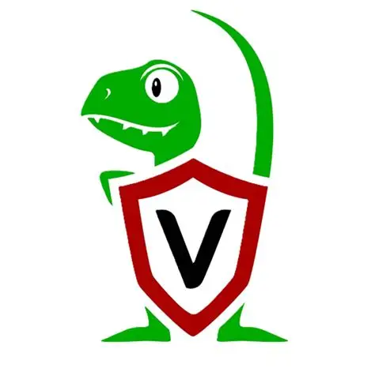
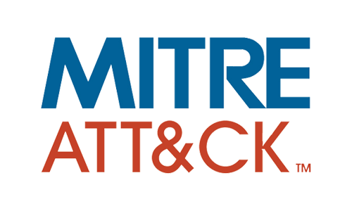
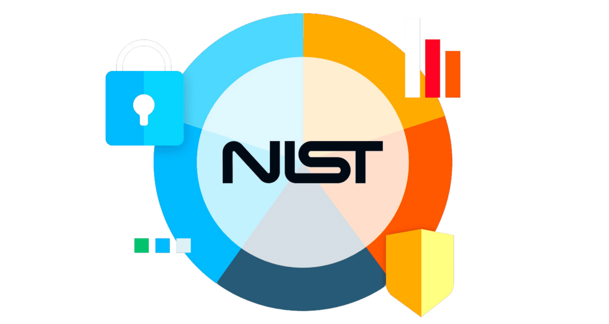
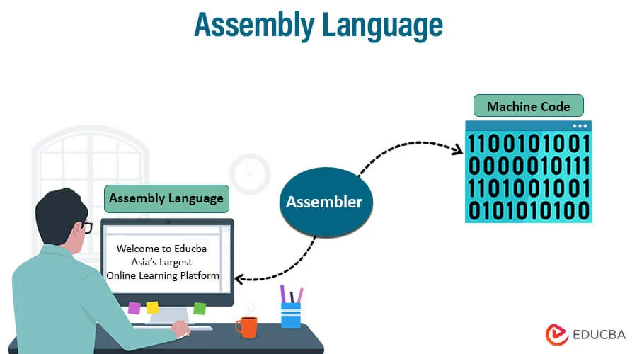
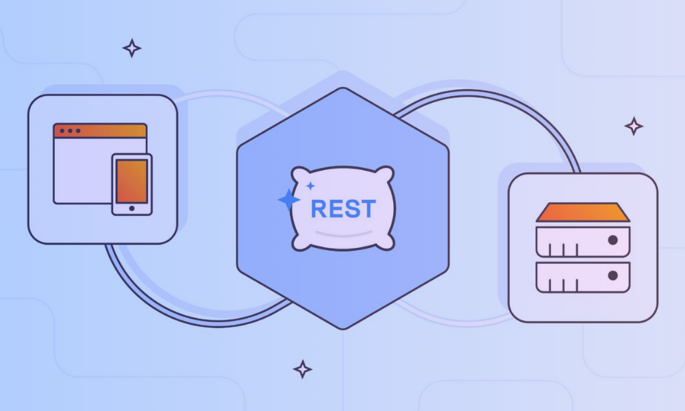

Hola, soy Simón Enciso
Ingeniero Informático especializado en Ciberseguridad
Un
Mente curiosa, con ganas de crear y entender el funcionamiento de las cosas.
Sobre mí
Estudiante de último año de Ingeniería Informática en la UPM, enfocado en analisis de sistemas. Interesado en ciberseguridad sobre todo en el rol de analista. Poseo el Google Cybersecurity Certificate . Con conocimientos en análisis de logs, monitorización de eventos de seguridad y respuesta ante incidentes en entornos SOC.
He formado parte de la Delegación de Alumnos, desarrollando habilidades de trabajo en equipo y organización.
Buscando una oportunidad para trabajar en un puesto desafiante que combine mis habilidades como ingeniero informático, que proporcione desarrollo profesional, experiencias interesantes y crecimiento personal.
Habilidades
Lenguajes de programación
Herramientas y plataformas
 CrowdStrike
CrowdStrike

Velociraptor Burp-suite
Burp-suite
Frameworks y metodologías

MITRE ATT&CK
NIST Cybersecurity FrameworkOtros
 Git
Git
Proyectos

Implementé algoritmos de compresión a bajo nivel, optimizando operaciones de memoria y registros.
- Herramientas: Ensamblador Motorola 88110, Optimización de memoria
- Compresor/descompresor de texto con bajo consumo de recursos.
- Optimización de operaciones a nivel de registro.

Implementé una Shell con ciertos comandos personalizados.
- Herramientas: C, Linux, Bash
- Intérprete de shell Unix funcional con parsing de comandos.
- Ejecución de procesos y redirección de E/S.

Con sus respectivos analizadores léxicos, sintácticos y semánticos.
- Herramientas: Java, JavaCC, Compiladores
- Procesador de lenguajes con análisis léxico, sintáctico y semántico.
- Generación de código e interpretación de AST.

Implementé un sistema de gestión de vinos con reseñas y usuarios.
- Herramientas: Java, Spring Boot, PostgreSQL, REST API
- API RESTful con endpoints CRUD para gestión de inventario de vinos.
- Persistencia de datos en PostgreSQL con validación y manejo de errores.
Formación
Universidad Politécnica de Madrid
Madrid, España
Título: Grado de Ingeniería Informática
- Seguridad de las Tecnologías de la Informacion
- Redes de Computadores
- Bases de datos
Cursos Relevantes:
Google Cybersecurity Certificate
- Fundamentos de ciberseguridad
- Conceptos SIEM
- NIST Cybersecurity Framework
- Respuesta ante incidente
- Análisis de logs
Cursos Relevantes:
Presentaciones
Como implementaria lo investigado en el artículo :Unsupervised Hunting of Anomalous Commands Kayhan, Agrawal & Shivendu · Decision Support Systems · 2023
Artículos
Mayo 2026 • Lectura: ~5 minutos
Machine Learning e inteligencia artificial son términos omnipresentes en tecnología. Este artículo explora una aplicación práctica: cómo algoritmos de aprendizaje automático pueden detectar comportamientos anómalos en sistemas empresariales, identificando intrusiones que pasarían desapercibidas para herramientas convencionales.
Descubre cómo los sistemas modernos aprenden el comportamiento "normal" de una empresa para reconocer cuándo algo no encaja.